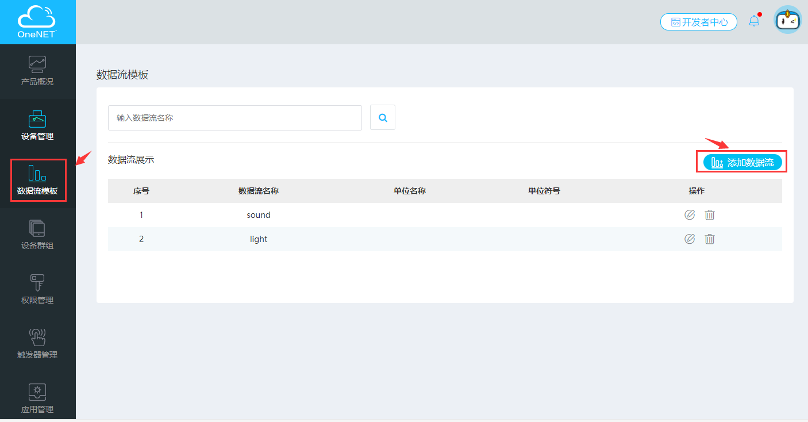
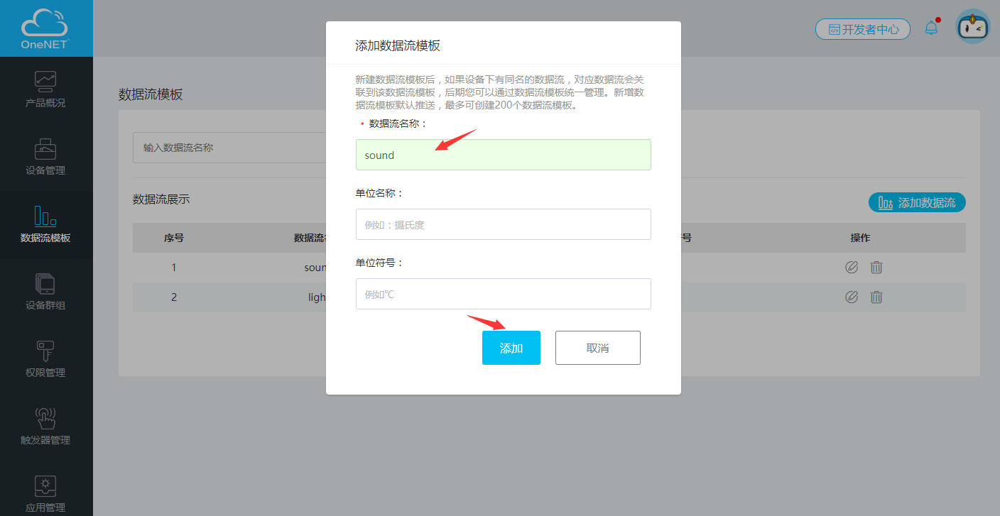
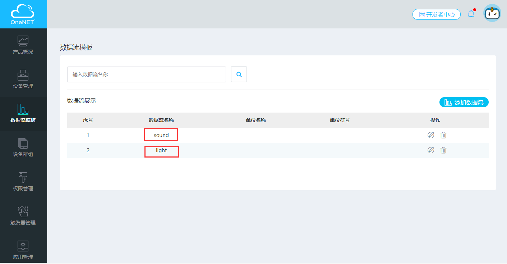
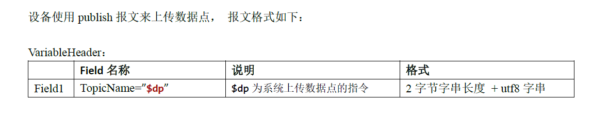
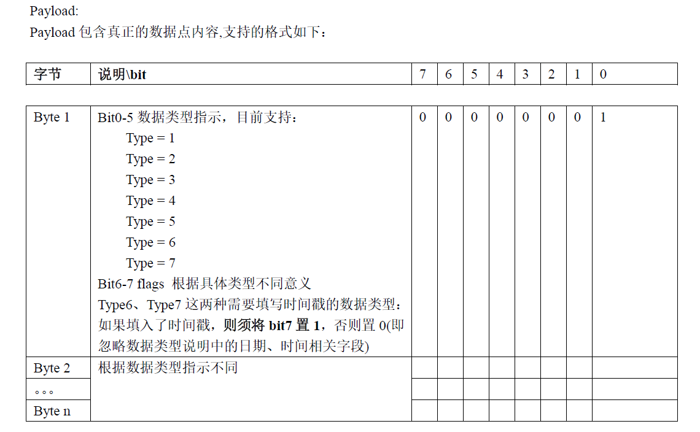
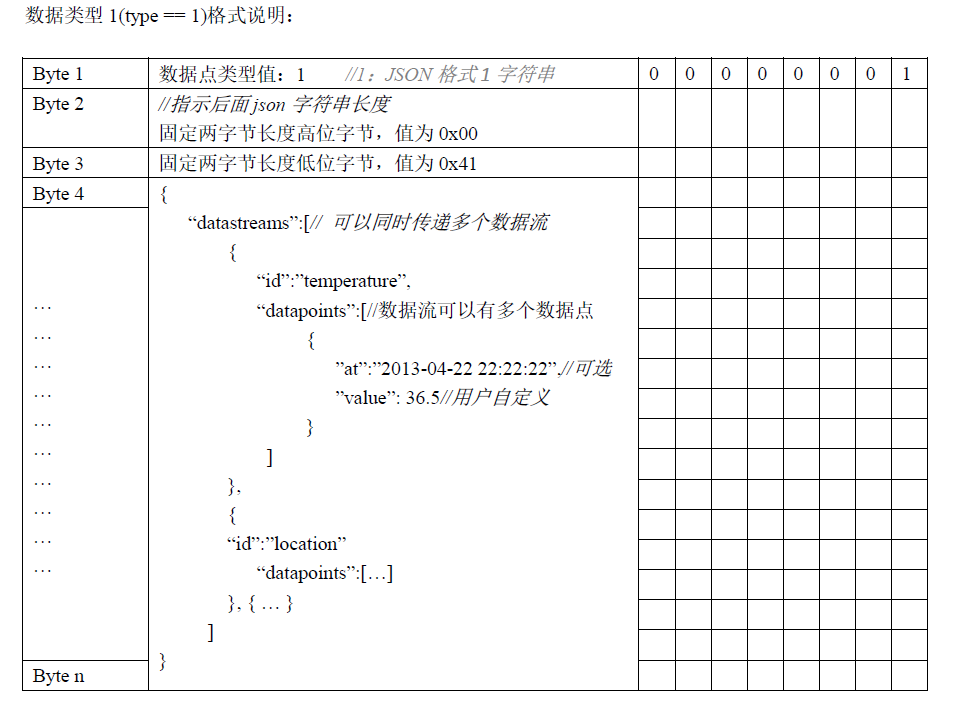
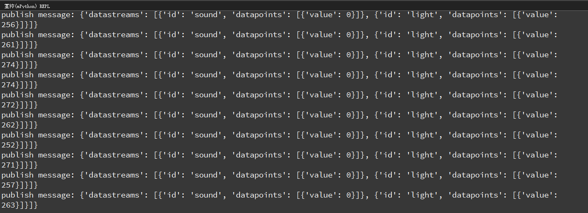
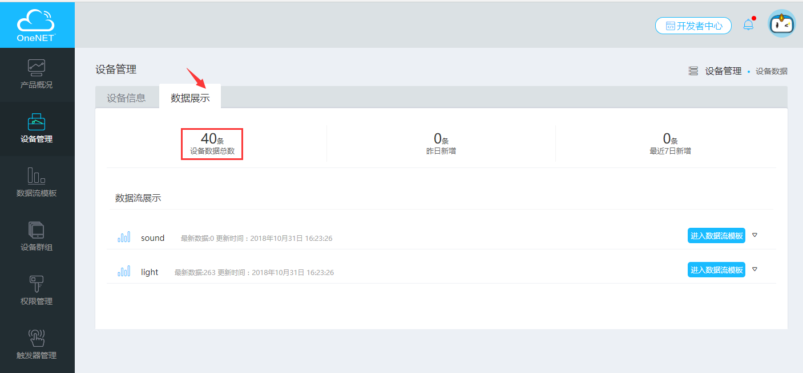
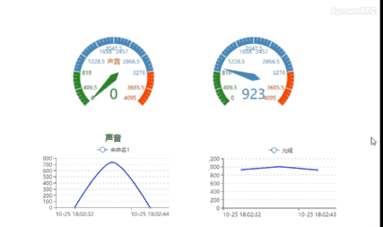

MQTT协议:2上传数据点到OneNET平台
在之前的教程中，学习过如何使用MQTT协议接入OneNET平台，同时获取该平台下发的命令实现远程控制的功能。 若之前没有接触过MQTT协议和OneNET平台的朋友，建议先学习上章的教程，
本次教程，将要学习如何在OneNET平台上新建数据流，同时使用MQTT协议中publish报文格式上传数据点。
OneNET平台新建数据流
OneNET平台官网地址：https://open.iot.10086.cn/。 若没有使用过的该平台的，可以参考上章的教程，先进行产品和设备的添加。
在数据点上报之前，我们需要在OneNET云平台上添加一个数据流模板。步骤如下：
1、进入[开发者中心]的[设备管理]页面，在左侧菜单栏中选择[数据流模板]，点击[添加数据流]。

2、会弹出一个添加数据流的对话框，必填项名称，其他可以选填，填完之后点击[添加]。

3、添加成功后，对话框会自动关闭。数据流展示列表会自动增加刚才新添加的数据流信息。

此次示例，我们需要添加sound和light两个数据流，如上图。
向OneNET平台上传数据点
OneNET数据点上报格式
传数据点时需要参考协议规则说明，大家可以去OnetNET平台文档中心上下载，OnetNET平台文档中心地址：https://open.iot.10086.cn/doc/art431.html#118。 找到[1.1 说明文档]找到关于MQTT项目中的设备终端接入协议-MQTT进行下载。打开之后找到[5.2消息发布]-[5.2.1 数据点上报]。
数据点上报格式如下:



我们示例用的是数据类型1(type == 1)的JSON格式。
我们自定义一个pubdata方法，该方法的功能是组合成协议要求的报文格式:
def pubdata(data):
j_d = json.dumps(data)
j_l = len(j_d)
arr = bytearray(j_l + 3)
arr[0] = 1 #publish数据类型为json
arr[1] = int(j_l / 256) # json数据长度 高位字节
arr[2] = j_l % 256 # json数据长度 低位字节
arr[3:] = j_d.encode('ascii') # json数据
return arr
设备使用publish报文来上传数据点。$dp为系统上传数据点的指令（2个字节的字符串）:
c.publish('$dp',pubdata(message))
完整程序示例:
from umqtt.simple import MQTTClient
from mpython import *
from machine import Timer
import json
# MQTT服务器地址域名为：183.230.40.39,不变
SERVER = "183.230.40.39"
#设备ID
CLIENT_ID = "deviceID"
#产品ID
username='productID'
#产品APIKey:
password='APIKey'
mywifi=wifi()
message = {'datastreams':[
{
'id':'sound',
'datapoints':[{'value':0}]
},
{
'id':'light',
'datapoints':[{'value':0}]
}
]}
tim1 = Timer(1) # 创建定时器
def pubdata(data):
j_d = json.dumps(data)
j_l = len(j_d)
arr = bytearray(j_l + 3)
arr[0] = 1 #publish数据类型为json
arr[1] = int(j_l / 256) # json数据长度 高位字节
arr[2] = j_l % 256 # json数据长度 低位字节
arr[3:] = j_d.encode('ascii') # json数据
return arr
def publishSenser():
message['datastreams'][0]['datapoints'][0]['value']=sound.read()
message['datastreams'][1]['datapoints'][0]['value']=light.read()
c.publish('$dp',pubdata(message)) #publish报文上传数据点
print('publish message:',message)
mywifi.connectWiFi("ssid","password")
c = MQTTClient(CLIENT_ID, SERVER,6002,username,password)
c.connect()
print("Connected to %s" % SERVER)
tim1.init(period=1000, mode=Timer.PERIODIC, callback=lambda _:publishSenser()) #每隔一秒上传数据点
效果展示
掌控板重启运行程序，每1秒上传声音和光线的数据流至OneNet。

设备指示灯显示绿色说明已经连接成功，选择[数据展示]，查看数据流接收情况。

在[应用管理]中创建应用，在应用中添加仪表图或折线图等元素，在属性中选择显示的数据流，最终效果如下:
